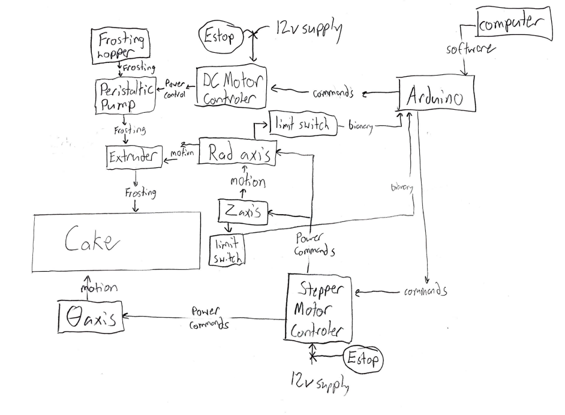

Final System Diagram
The following system diagram depicts the flow of energy, frosting, data, power, and control between every system in our machine. See the major design choices that influenced this diagram below.
Figure 1: Full System Diagram
CNC System
The polar CNC system was so conducive to our design because when frosting a circular cake rather than creating G-code like a traditional XYZ printer we simply input motor speeds and extruder rate to spin the cake and pull our rad-axis backwards as we frost in a spiral pattern. The theta axis also removes the need for a bed-slinger type printer which would struggle with the weight of some cakes or a core-XY which adds unneeded complexity.
Food Safety
Food safety was a major consideration and we decided to best meet this need by minimizing food contact parts and relying on products sold as food-safe to ensure safety. The core of our extruder, the peristaltic pump, does not contact the frosting and instead squeezes it through a flexible, food-safe, tube sold on McMaster. Our frosting hopper and extruder are both coated in food safe epoxy and the build plate is acrylic which is also food safe.
Peristaltic Tradeoffs
Choosing a peristaltic pump made food safety fairly simple, but seriously limited the frosting viscosity we could handle because the frosting has to freely flow into the pump tubing. In retrospect, a syringe type system would have been far better since it would forcibly push frosting through the tubing without relying on gravity.
Additionally, our final pump design was a 3-roller model which sacrificed flow consistency for ease of design and manufacturing. A design with more rollers would even out the flow rate more so it would pulsate less. This pulsating was not a major issue in our final extruder system but could become an issue when doing finer frosting designs.
Programming Design Considerations
For programming the motors, we had started our design with the Stepper library and ran into issues with blocking and separated motor control. As a solution, we chose to use the AccelStepper library for Arduino. By using this library, we were able to avoid any blocking that would interfere with precise timing or motor control. Additionally, this library allows multiple steppers to be moved together or one at a time. We need both functions for different controls, so the AccelStepper was fully comprehensive of all our needs in this project for complex motor control.